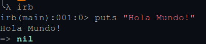
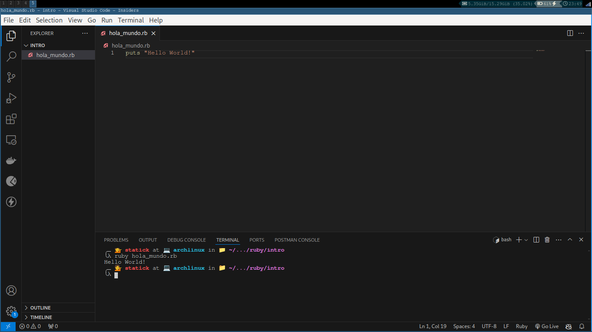
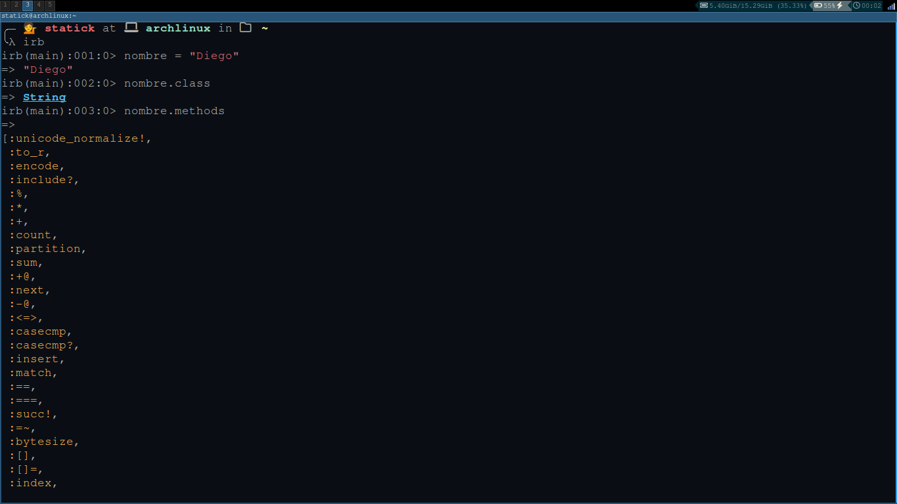

Introducción
Ruby es un lenguaje de programación interpretado, orientado a objetos y de tipado dinámico. Fue creado por Yukihiro Matsumoto en 1993 y es un lenguaje de programación de alto nivel.
Es un lenguaje de programación muy flexible y fácil de aprender. Es un lenguaje de programación muy popular en la actualidad y es utilizado por muchas empresas en todo el mundo.
En este curso aprenderás los conceptos básicos de Ruby y cómo puedes utilizarlo para crear aplicaciones web y aplicaciones de consola.
Instalación
Para instalar Ruby en tu computadora, puedes seguir las instrucciones en la página oficial de Ruby: https://www.ruby-lang.org/en/documentation/installation/
Hola Mundo con el interprete irb

Al igual que otros lenguajes como python o c++ Ruby tiene un interprete que nos permite ejecutar código de manera interactiva. Para abrir el interprete de Ruby solo necesitas abrir una terminal y escribir irb.
irbUna vez que hayas abierto el interprete de Ruby puedes escribir código de Ruby y ver los resultados de manera inmediata.
puts "Hola Mundo"Hola Mundo con un archivo de Ruby

Se sugiere instalar un editor de texto o un IDE para escribir código de Ruby. Algunos de los editores de texto más populares son Visual Studio Code, Sublime Text y Atom.
Para este curso vamos a utilizar Visual Studio Code.
Para escribir un programa de Ruby en un archivo, solo necesitas abrir Visual Studio Code y escribir el siguiente código:
puts "Hola Mundo"Guarda el archivo con la extensión .rb y ejecuta el archivo en la terminal con el siguiente comando:
ruby hola_mundo.rbComo mencionamos anteriormente todo en Ruby es un objeto, por lo tanto vamos a poder acceder a los métodos como .class para saber el tipo de objeto que estamos utilizando.
puts nombre.class
puts edad.classSi queremos conocer cuantos métodos tiene un objeto podemos utilizar el método .methods.
puts nombre.methodsEsto nos mostrará una lista de todos los métodos que podemos utilizar con el objeto.

Si quiero conocer el valor de la variable solo debo escribir el nombre de la variable.
puts nombreEsto imprimirá el valor de la variable en la consola.
Para limpiar la consola en Ruby puedes utilizar el método system(“clear”) o la combinación de teclas Ctrl + L.
Ruby está pensado para que sea muy expresivo, existen métodos como .odd y .even que nos permiten saber si un número es par o impar.
numero = 5
puts numero.odd?
puts numero.even?Como puedes notar al final de cada método se utiliza el signo de interrogación ? para indicar que el método retorna un valor booleano.
Ejericios
- Escribe un programa que imprima tu nombre en la consola.
- Escribe un programa que imprima tu edad en la consola.
- Escribe un programa que imprima tu nombre y tu edad en la consola.
- Escribe un programa que imprima tu nombre y tu edad en la consola utilizando variables.
- Escribe un programa que imprima tu nombre y tu edad en la consola utilizando variables y métodos.
- Escribe un programa que imprima tu nombre y tu edad en la consola utilizando variables y métodos y que además imprima si tu edad es par o impar.
- Escribe un programa que imprima tu nombre y tu edad en la consola utilizando variables y métodos y que además imprima si tu edad es par o impar y que además imprima si tu edad es mayor o igual a 18 años.
Respuestas
1puts "Tu nombre"
2puts 25
puts "Tu nombre"
3puts 25
4nombre = "Tu nombre"
edad = 25
puts nombre
puts edad
puts nombre.class
puts edad.class
puts nombre.methods
5puts edad.methods
puts nombre
puts edad
puts edad.odd?
6puts edad.even?
puts nombre
puts edad
puts edad.odd?
puts edad.even?
7puts edad >= 18- 1
- Imprime tu nombre en la consola.
- 2
- Imprime tu edad en la consola.
- 3
- Imprime tu nombre y tu edad en la consola.
- 4
- Imprime tu nombre y tu edad en la consola utilizando variables.
- 5
- Imprime tu nombre y tu edad en la consola utilizando variables y métodos.
- 6
- Imprime tu nombre y tu edad en la consola utilizando variables y métodos y que además imprima si tu edad es par o impar.
- 7
- Imprime tu nombre y tu edad en la consola utilizando variables y métodos y que además imprima si tu edad es par o impar y que además imprima si tu edad es mayor o igual a 18 años.
Conclusiones
En este capítulo aprendiste los conceptos básicos de Ruby y cómo puedes utilizarlo para crear aplicaciones web y aplicaciones de consola. Aprendiste cómo imprimir texto en la consola, cómo utilizar variables y métodos, y cómo utilizar métodos para saber si un número es par o impar.